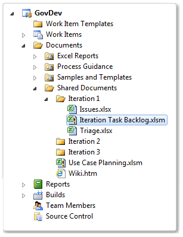

You can use workbooks to build your product backlog and plan work by assigning the use cases, tasks, bugs, and issues to specific iterations, also referred to as sprints. By using the workbooks that are provided with the process template for GovDev for TFS 2010 v1.0, you can quickly create work items and modify the rank, priority, state, and assignments of multiple work items at the same time.
In this topic
 Required
Configurations to Use Workbooks
Required
Configurations to Use Workbooks
To access and use the workbooks, the following configurations must be met:
-
To access a workbook, your team project must have been provisioned with a project portal.
Workbooks are stored on the server that hosts SharePoint Products for your team project. If a project portal has not been enabled for your team project, you cannot access the workbook. For more information, see Access a Team Project Portal and Process Guidance.
-
To open a workbook in Office Excel, you must have the Team Foundation Office Integration add-in installed on your client computer. This add-in is installed when you install any product in Visual Studio ALM.
Common
Tasks Performed Using Workbooks
|
Task |
Workbook |
||
|---|---|---|---|
|
Build the backlog of use cases and balance workload across iterations. You can use the Use Case Planning workbook to balance use cases across iterations. To build the product backlog, you review, rank, prioritize, and assign points to use cases. To balance workload, you assign each use case to a specific iteration and adjust as needed until the story points that are assigned across all iterations are balanced.
This workbook uses the Use Case Planning team query to list use cases that are not closed or that have not been closed in the last 90 days. |
|||
|
Plan and balance workload for an iteration. You can use the Iteration Task Backlog workbook to plan and track the progress of work for a specific iteration. By using this workbook, you can determine the team capacity, adjust work based on over or under allocated capacity for both the team and individual team members, and break down use cases into tasks for the team to work on. You can create additional workbooks to support additional iterations.
This workbook uses the Iteration Task Backlog team query to list the use cases and linked tasks that are assigned to an iteration. |
|||
|
Review, rank, and track blocking issues. You can use the Issues workbook to review and rank problems that might block team progress. This workbook uses the Open Issues team query to list all issues that are not closed. |
|||
|
Triage bugs. You can use the Triage workbook to rank and assign bugs to be worked on for an iteration. This workbook uses the Bug Triage team query to list all active bugs that are assigned to an iteration but not a team member. |
Opening
a Workbook
You can open a workbook from the team project portal or by using Team Explorer.
|
|
|---|
|
When you open a workbook, it is connected to the server that hosts SharePoint Products for your team project. Changes that you make to the workbook must be published to the database for tracking work items. Also, you must save the workbook on the server to give other team members access to the updates. |
To open a workbook by using Team Explorer
-
Open Team Explorer, and expand your team project node.
-
Expand the Documents node, and then expand Shared Documents.
The default set of folders and workbooks matches the following illustration.
 -
Right-click the workbook that you want to open, and then click Open .
-
In the File Download dialog box, click OK .
The workbook opens in Office Excel. Macros are automatically disabled. At the top of the workbook, the notices in the following illustration appear.

-
Click Options.
-
In the Microsoft Office Security Options dialog box, under Macro s, click Enable this content, and then click OK.
-
Click Edit Workbook, and modify the workbook as needed.
-
Save and close the workbook.
Related
Tasks
|
Task |
Related topics |
|---|---|
|
Build the product backlog, plan a sprint, and track progress. Scrum defines a set of processes that are based on the agile principles and values, which can help your team deliver more value to your customers faster. |
|
|
Plan the structure of your meetings. Each agile practice has, at its core, a set of meetings that keep the project on track and moving in the correct direction. |
|
|
Define requirements, use cases or scenaios. A team creates requirements and use cases to define the features and functions to be implemented. |
|
|
Estimate and track work. A team uses tasks to track the level of effort that is required to implement a use case or other area of work that is identified for the project. |
|
|
Define and manage risks, issues, or impediments. You can define known or potential problems, impediments, or risks to your project by using the issue work items. |
|
|
Open and track bugs. You can track code defects by using bug work items. |